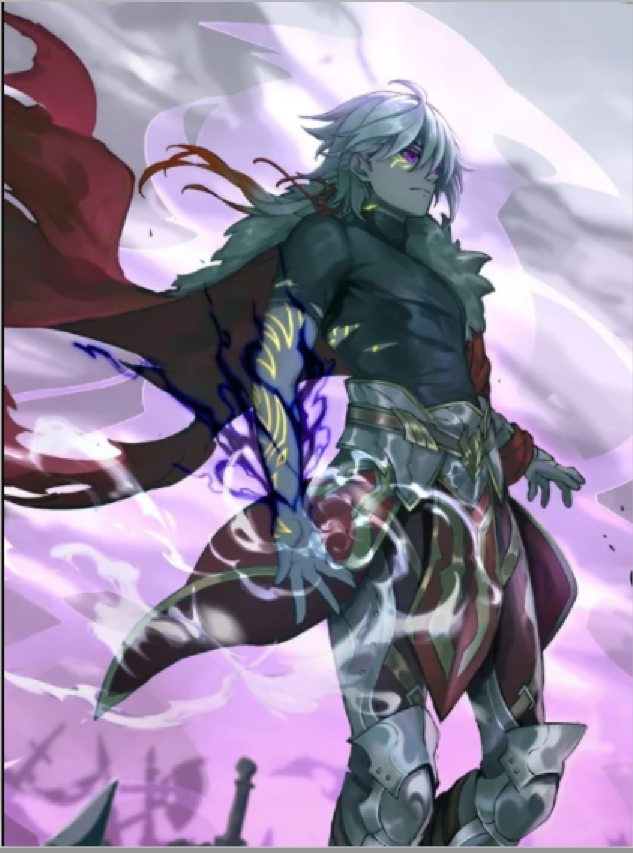

Mijn naam is Hayder Abidi, ik ben 16 jaar oud en ik woon in Amsterdam.
Ik ben zelf nog niet de beste developer, maar ik ken wel de basics
van frontend development. En ik wil graag veel meer leren over
frontend development en andere delen van programmeren.
 Ga naar pagine 2 >